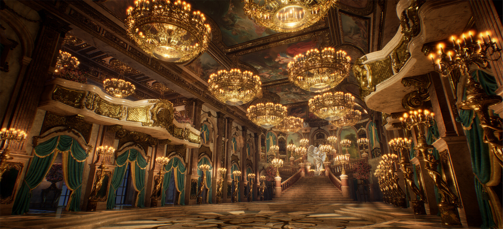
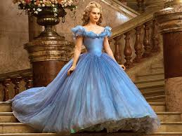
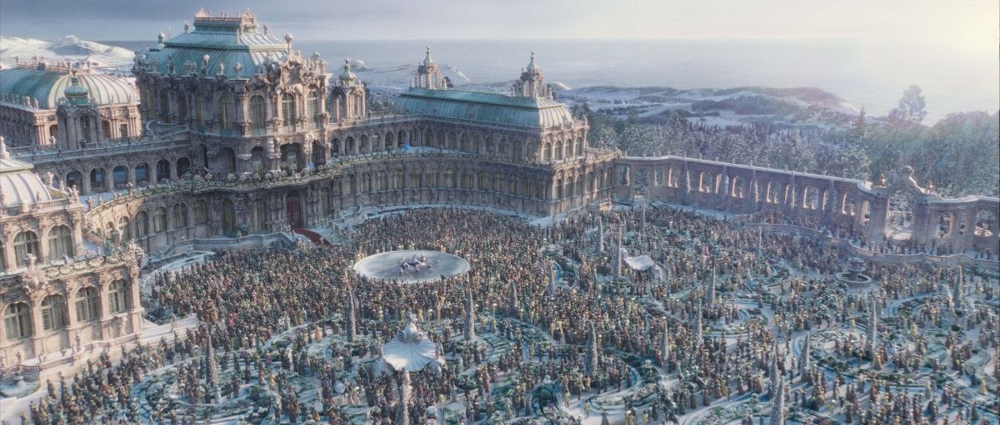
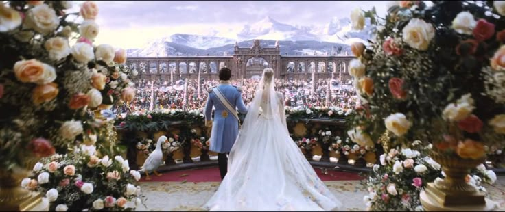

Cinderella (2015) feels magical in a way very few movies do. The cinematography, costumes, soundtrack, and emotional storytelling create a dreamy atmosphere that feels timeless.
What makes the movie so impactful is its focus on kindness as strength. Cinderella’s softness is never portrayed as weakness — instead, it becomes the thing that makes her powerful.

One of the most iconic parts of the film is Cinderella’s blue gown. The dress used layers of fabric and Swarovski crystals to create the glowing magical effect seen in the ballroom scenes.

Cinderella is one of the most famous fairytales in history. Versions of the story appear across cultures all around the world, each reflecting themes of hope, resilience, transformation, and justice.
The glass slipper, the magical transformation, and the midnight escape have become iconic symbols recognized globally.

The earliest Cinderella stories date back thousands of years. The most famous versions were written by Charles Perrault and the Brothers Grimm.
Disney’s adaptations soften the darker themes found in older versions, transforming the story into one centered on romance, kindness, and hope.
Cinderella has been adapted into hundreds of stories, movies, and retellings across different cultures.
The 2015 version stands out because it keeps the classic fairytale atmosphere while adding emotional depth and breathtaking visuals.
